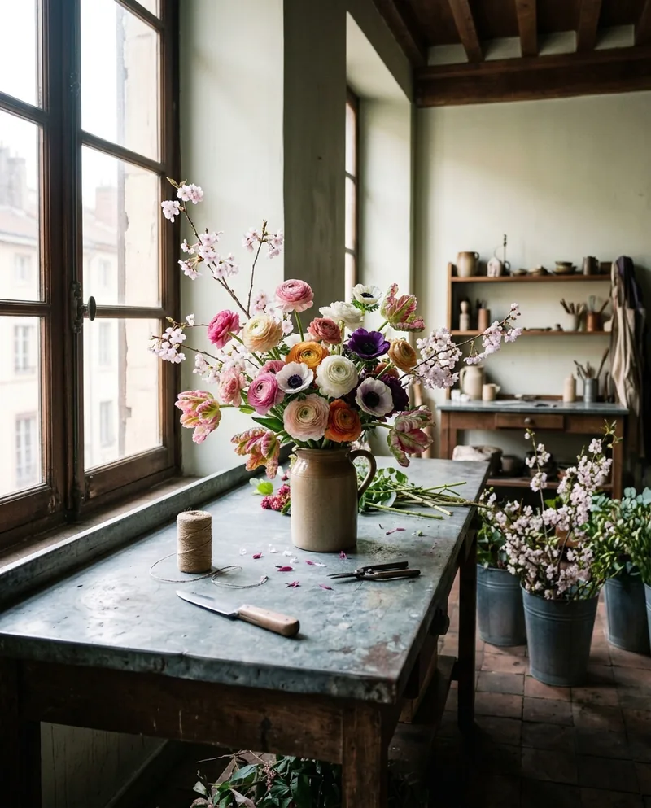
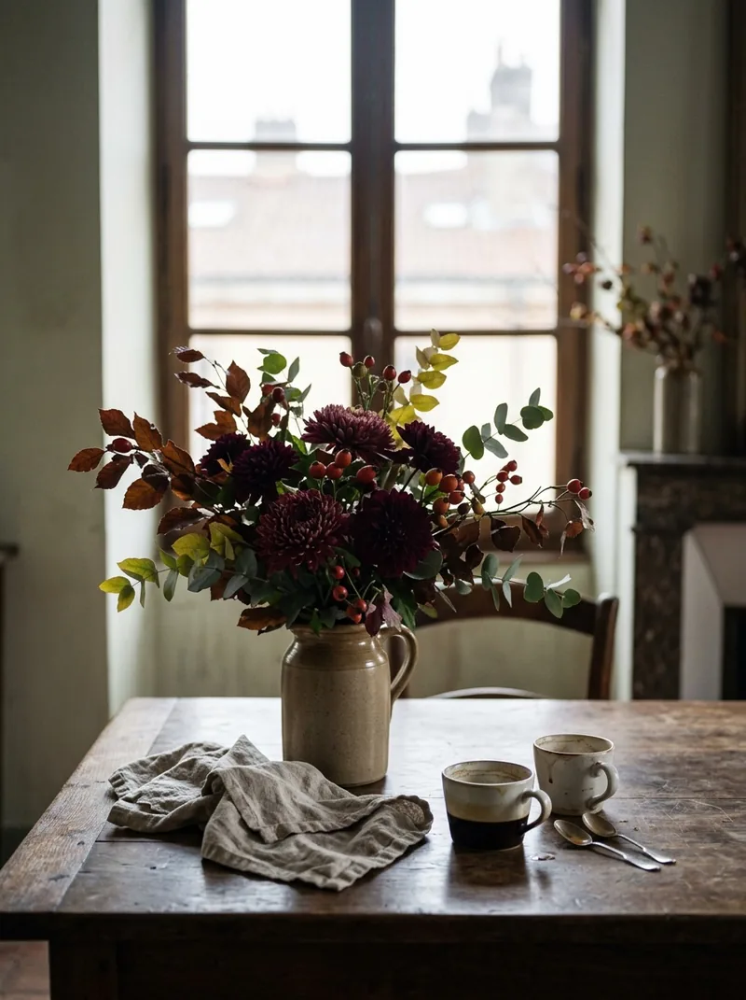
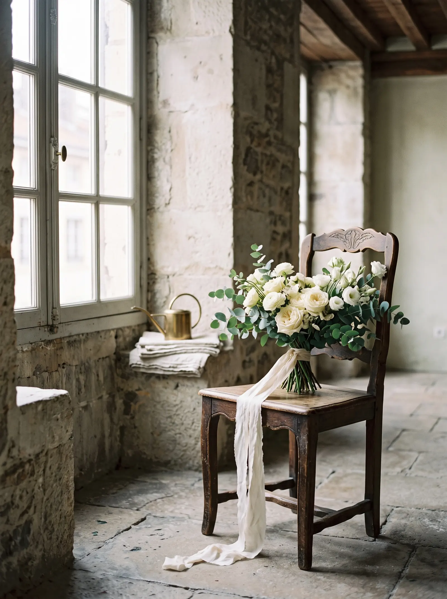
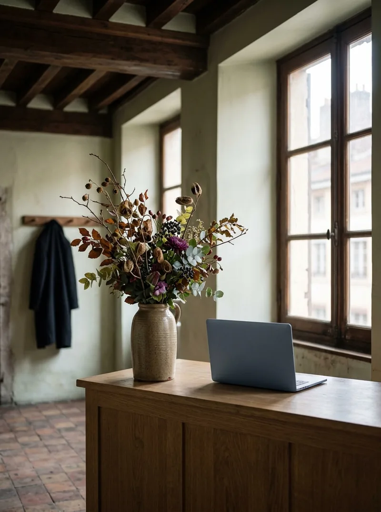
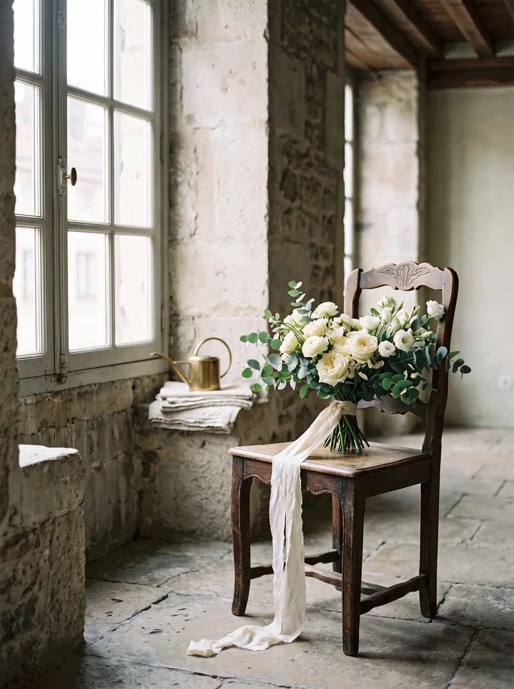
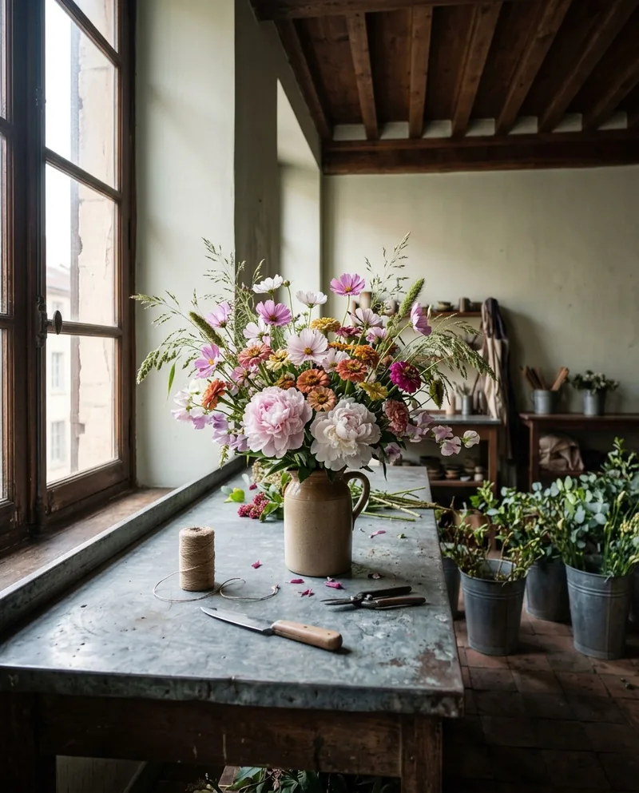
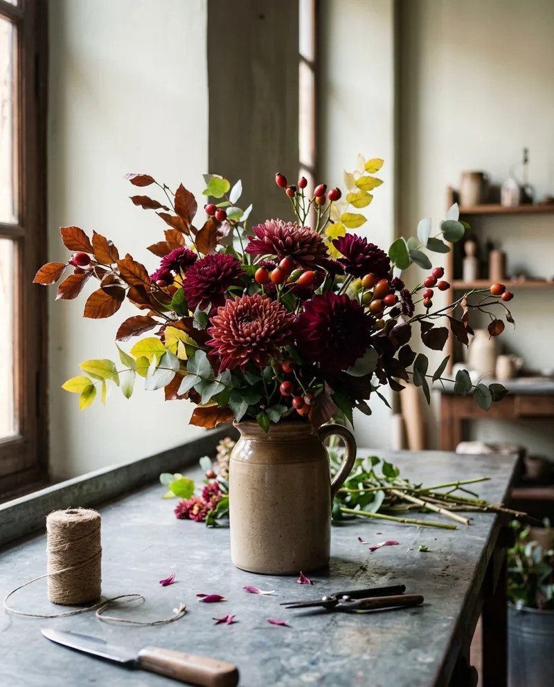
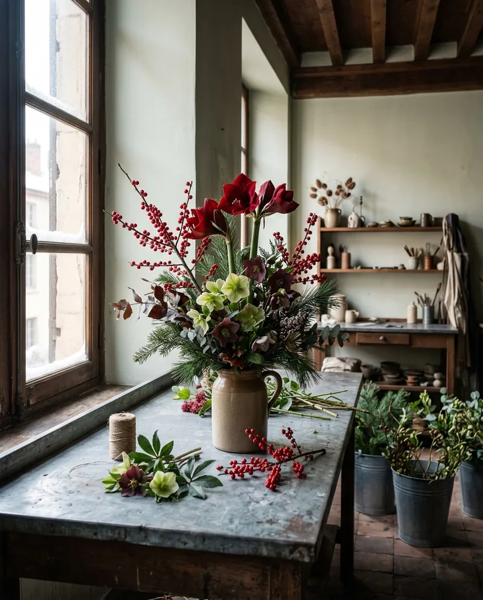
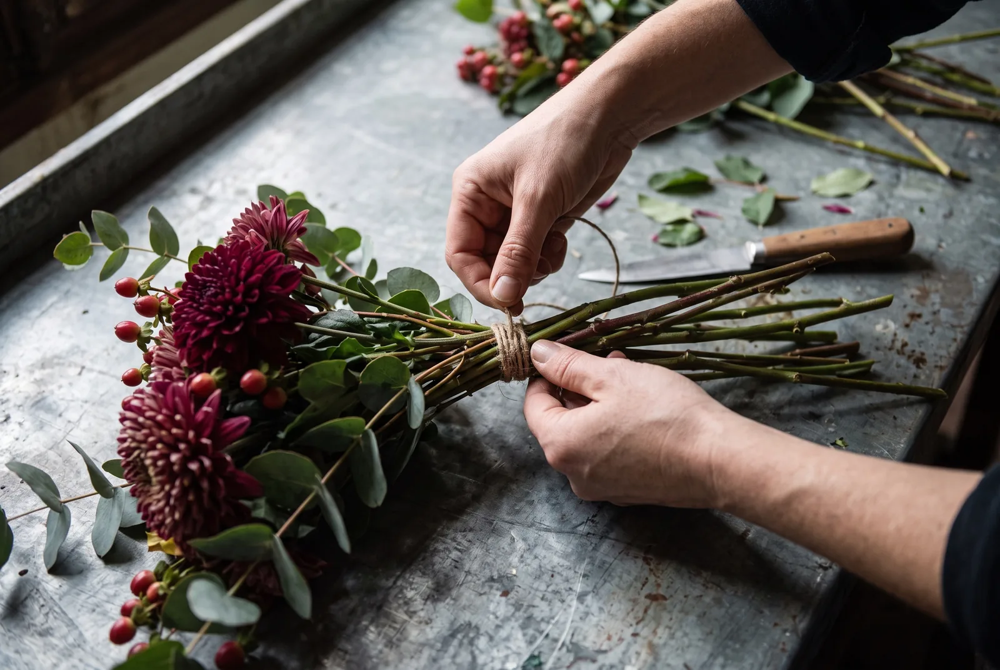

Printemps
Renoncules, anémones, tulipes perroquet, cerisier.



Bouquets, mariages et abonnements pour les bureaux du quartier.
Demander une compositionPour la table du dimanche.
Un bouquet de ce que la semaine a apporté.

Pour le jour du mariage.
Composé pour le lieu, la robe et la saison.
Pour le bureau, semaine après semaine.
Des fleurs fraîches à l'accueil, sans y penser.
Nous ne promettons pas une pivoine en janvier.

Renoncules, anémones, tulipes perroquet, cerisier.

Pivoines, cosmos, zinnias, pois de senteur.

Dahlias, chrysanthèmes, cynorrhodons, hêtre cuivré.

Hellébores, amaryllis, houx, pin.
Bouquet de la mariée, boutonnières, cérémonie, tables. Nous partons du lieu, de la saison et de votre budget.
Parler de votre mariageVous choisissez le rythme et les espaces. Nous passons, nous changeons, nous reprenons ce qui a fané.
Demander un abonnementUne table, un mariage, un bureau. Quelques lignes suffisent.
Une proposition et un prix, selon la saison. Puis le geste, à l'atelier.
Nous convenons ensemble de la livraison ou du retrait.

Les hautes fenêtres de la Croix-Rousse éclairaient les métiers à tisser. Elles éclairent bien les fleurs aussi.
Nos clients sont nos voisins : les habitants du quartier et les bureaux d'à côté.
Nous partons de ce que la saison donne, et nous tenons compte de vos couleurs et de ce que vous aimez.
Cela dépend de la taille et de la saison. Nous vous donnons le prix avant de composer.
Le plus tôt possible : la date décide des fleurs disponibles.
Oui. Le rythme et les espaces se règlent avec vous.
Nous répondons avec une proposition et un prix. Rien n'est engagé tant que vous n'avez pas dit oui.